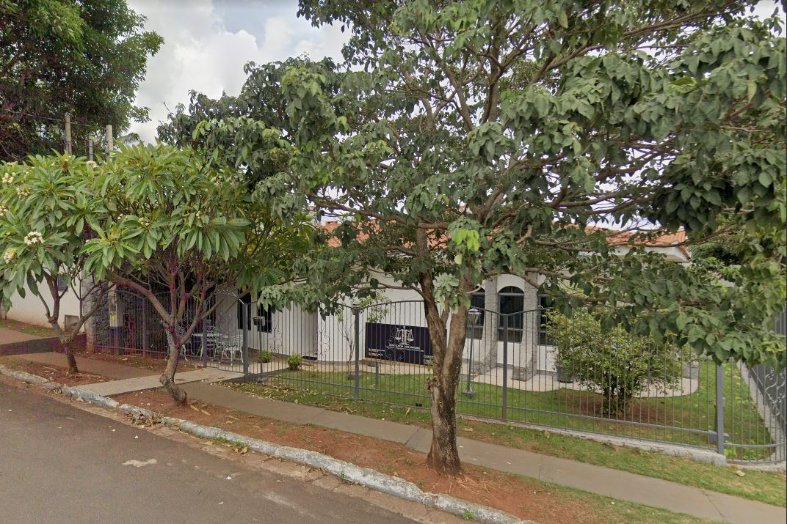

Advocacia em Ourinhos, SP Orientação jurídica com atenção a cada caso.
Atendimento próximo, linguagem clara e acompanhamento do início ao fim para você e sua família.

45+anos advogando
Sobre nós
Nossa empresa está há mais de 45 anos advogando. Buscamos oferecer um serviço jurídico de qualidade, sempre em busca de atender as expectativas e necessidades de cada cliente.
Afinal, o nosso objetivo é alcançar resultados satisfatórios que possam reforçar a confiança e a fidelidade dos nossos clientes. Por isso, a Advocacia Bernardini & Associados se esforça constantemente para se aprimorar.
Áreas de atuação
Atuamos nas questões que mais aparecem no dia a dia das pessoas e das empresas da região.
-
Família e Sucessões
Divórcio, guarda, pensão alimentícia, inventário e testamento, conduzidos com cuidado e discrição.
-
Direito Civil
Contratos, indenizações, cobranças e questões de imóveis.
-
Trabalhista
Rescisões, horas extras e acidentes de trabalho.
-
Previdenciário
Aposentadorias, auxílios e revisão de benefícios do INSS.
-
Consumidor
Cobranças indevidas, negativação e problemas com produtos e serviços.
-
Empresarial
Contratos, cobranças e orientação jurídica para a rotina da sua empresa.
Sua questão não está na lista? Conte o que está acontecendo pelo WhatsApp. Se não for a nossa área, indicamos o caminho.
Como funciona o atendimento
Você sabe o que está acontecendo com o seu caso em cada etapa.
-
Conversa inicial
Você conta a situação. Ouvimos com atenção e explicamos quais são as opções.
-
Análise do caso
Estudamos documentos e prazos e indicamos o caminho mais seguro, com clareza sobre riscos e custos.
-
Acompanhamento
Você recebe notícias de cada etapa, em linguagem simples, até a conclusão.
Fale conosco
Atendemos presencialmente no escritório e também pelo WhatsApp.
- Segunda a quinta
- 9h às 19h
- Sexta
- 9h às 17h
- Sábado e domingo
- Fechado